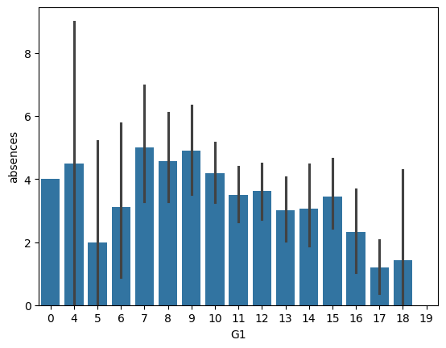
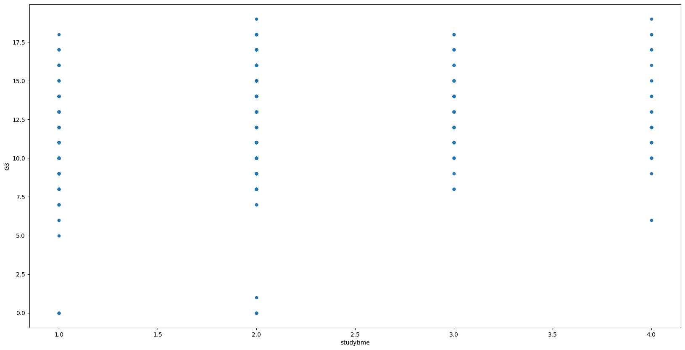

Education Analysis Project
Zane Hutchens - January 26, 2024The Problem
I would like to try to solve how student demographical information can be used to identify students who may benefit from extra support in the classroom. I believe this datset contains the perfect information for that, including student information, weekly habits, and parental information.
Introducing the Dataset
This dataset combines student demographic information such as gender, age, school, and address with information such quality of family relationships, health, number of absences, previous class failures, and more. Additionally, it contains information about the mother and father, such as their education level, job, and marriage status. This dataset contains 33 columns and 695 rows, and was mostly filled using school questionnaires and surveys. The dataset I will be using can be found here: https://www.kaggle.com/datasets/larsen0966/student-performance-data-set
Visualizations and Code:
This first visualization compares student final grades to absences:
Secondly, this visualization compares the amount of study time a student did per week to their final grade:
Finally, you can find my source code at this github page: https://github.com/zhutchens/educational-analysis